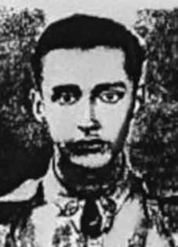

Darcy
José
dos Santos
Mariante
CIRCUNSTÂNCIAS DA MORTE
Darcy José dos Santos Mariante morreu em 8 de abril de 1966, em Porto Alegre (RS). Em janeiro de 1965, foi preso por 30 dias e submetido a torturas no 1o Batalhão da Polícia Militar de Porto Alegre. Foi processado com base no artigo 7o do Ato Institucional n o 1, sob a acusação de que teria participado de atividades políticas contrárias aos ideais do Golpe de 1964. Condenado, foi afastado de suas atividades profissionais. Em razão das perseguições políticas, Darcy ficou muito abalado emocionalmente. Entrou em depressão grave e, em 8 de abril de 1966, cometeu suicídio, diante da família, com um tiro no peito. A versão oficial aponta como a causa da morte “parada cardíaca pós-operatória, hemotórax agudo” e o atestado de óbito confirma tal versão. No entanto, levando em consideração as particularidades do período histórico em que Darcy, conclui-se que o seu falecimento também decorreu da prisão e das torturas que sofreu. O corpo de Darcy José dos Santos Mariante foi sepultado no cemitério da Irmandade São Miguel e Almas em Porto Alegre (RS).
Darcy José dos Santos Mariante died on April 8, 1966, in Porto Alegre (RS). In January 1965, he was arrested for 30 days and subjected to torture in the 1st Battalion of the Military Police of Porto Alegre. He was prosecuted based on article 7 of Institutional Act No. 1, under the accusation that he had participated in political activities contrary to the ideals of the 1964 Coup. Convicted, he was removed from his professional activities. Due to political persecution, Darcy was very emotionally shaken. He fell into severe depression and, on April 8, 1966, committed suicide, in front of his family, by shooting himself in the chest. The official version states that the cause of death was “post-operative cardiac arrest, acute hemothorax” and the death certificate confirms this version. However, taking into account the particularities of the historical period in which Darcy lived, it can be concluded that his death was also a result of the imprisonment and torture he suffered. The body of Darcy José dos Santos Mariante was buried in the cemetery of the Irmandade São Miguel e Almas in Porto Alegre (RS).
Darcy José dos Santos Mariante murió el 8 de abril de 1966 en Porto Alegre (RS). En enero de 1965 fue detenido durante 30 días y sometido a torturas en el 1.er Batallón de la Policía Militar de Porto Alegre. Fue procesado con base en el artículo 7 del Acto Institucional No. 1, bajo la acusación de haber participado en actividades políticas contrarias a los ideales del Golpe de 1964. Condenado, fue apartado de sus actividades profesionales. Debido a la persecución política, Darcy estaba muy conmocionado emocionalmente. Cayó en una grave depresión y, el 8 de abril de 1966, se suicidó, delante de su familia, disparándose un tiro en el pecho. La versión oficial señala que la causa de la muerte fue “paro cardíaco postoperatorio, hemotórax agudo” y el certificado de defunción confirma esta versión. Sin embargo, teniendo en cuenta las particularidades del período histórico en el que vivió Darcy, se puede concluir que su muerte también fue consecuencia del encarcelamiento y tortura que sufrió. El cuerpo de Darcy José dos Santos Mariante fue enterrado en el cementerio de la Irmandade São Miguel e Almas en Porto Alegre (RS).